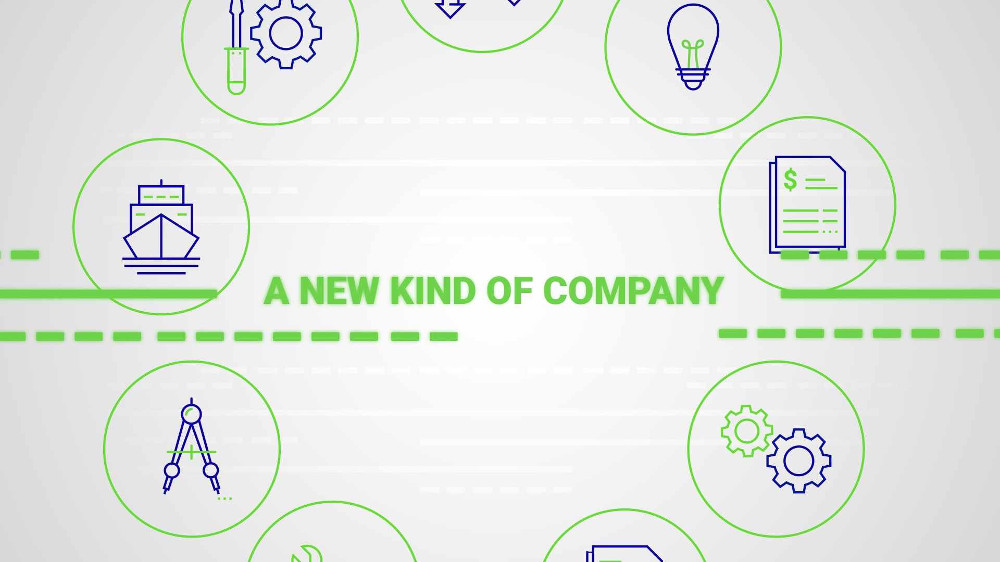
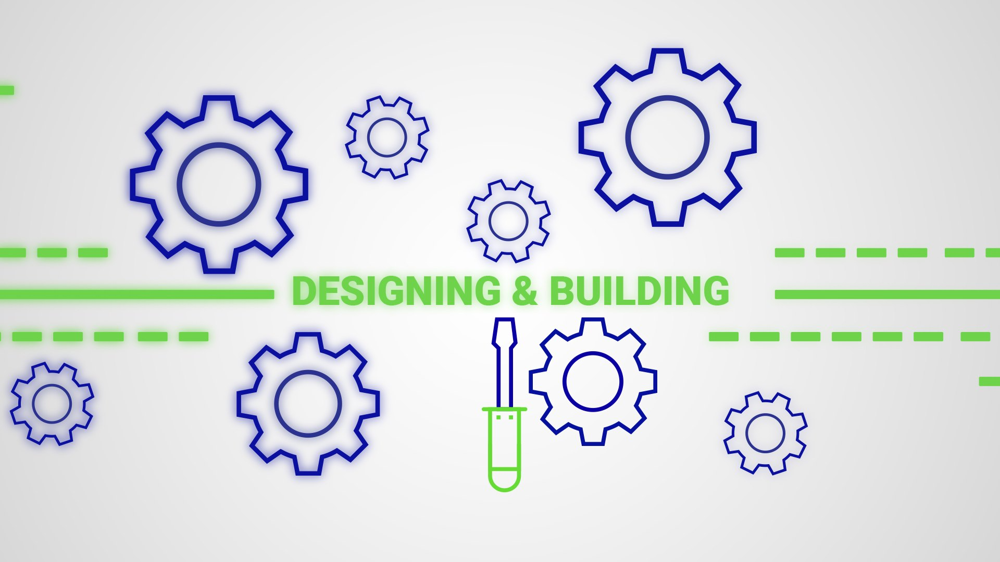
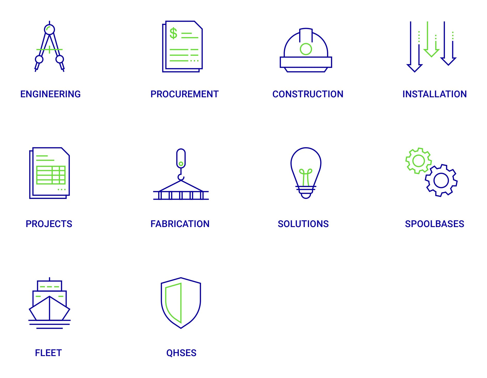

McDermott
Brand film storyboards, styleframes and a line-icon set for McDermott, produced in partnership with Landor.

The problem
Landor's "McDermott Design Intent, Round 1" storyboards (April 2018) script a short brand film around the line "Two iconic companies. Now one.", moving through "Delivering end to end", "Infrastructure and technology solutions", "Certainty", "Innovation" and "Value" to close on "We are McDermott."
The approach
The styleframes set those lines in green type on a pale grey field, with McDermott's capabilities drawn as a navy-and-green line-icon family. Icons multiply and connect with dashed lines for "End to end infrastructure", gears and tools fill the frame for "Designing & building", and the full set gathers in a ring of circles for "A new kind of company".
The icon set itself covers ten areas of the business: Engineering, Procurement, Construction, Installation, Projects, Fabrication, Solutions, Spoolbases, Fleet and QHSES. Each was also prepared as a stroke version for animation.


Leadership
Directed agency:collective's motion and icon work for Landor, from storyboards through animated sequences.